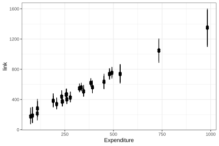

5.6 Estimation and prediction
According to Heeringa et al. (2017), regression models serve two fundamental objectives. The first is to explain the variability of the response variable using the available covariates, a purpose that has been developed throughout this chapter. The second corresponds to predicting the expected value of the variable of interest for new observations, both within and outside the sample domain. The following expression represents the expected value of the response variable \(y_k\) conditional on the observed covariate vector \(\mathbf{x}_{k}\). In other words, the model uses the available information from the explanatory variables to estimate the expected average value of the variable of interest for unit \(i\).
\[ \hat \mu_k = \hat{E}(y_{k}\mid\mathbf{x}_{k})=\mathbf{x}_{k}\hat{\boldsymbol{\beta}} \]
Likewise, the variance associated with the estimation of the expected value, defined as \({Var}(\hat{\mu}_k) = {Var}(\mathbf{x}_{k}\hat{\boldsymbol{\beta}})\), can be estimated using the following expression:
\[ \widehat{Var}(\hat \mu_k) = \mathbf{x}'_{k}\ \hat{\boldsymbol{\Sigma}}\ \mathbf{x}_{k} \]
Here, \(\hat{\boldsymbol{\Sigma}}=\widehat{Var}(\hat{\boldsymbol{\beta}})\) corresponds to the estimated variance-covariance matrix of the regression model parameters. This expression quantifies the uncertainty associated with the prediction obtained for unit \(k\), simultaneously considering the variability of each estimated coefficient and the correlation between them. Consequently, units whose covariate values are associated with regions of greater uncertainty in coefficient estimation will have higher variances. Therefore, the precision of the estimates depends directly on the precision with which the regression model coefficients are estimated. Continuing with the example model, recall that the estimated model coefficients are presented in Table 5.4:
The model coefficients are converted to a tidy table using broom::tidy() (Robinson et al., 2026), which makes it easier to present estimates, standard errors, and tests in a rectangular structure.
| term | estimate | std.error | statistic | p.value |
|---|---|---|---|---|
| (Intercept) | 73.580 | 59.470 | 1.237 | 0.218 |
| Expenditure | 1.222 | 0.197 | 6.212 | 0.000 |
| ZoneUrban | 66.652 | 39.666 | 1.680 | 0.096 |
| SexMale | 20.644 | 15.611 | 1.322 | 0.189 |
Based on the estimated model coefficients, the estimate of the expected value of the response variable for unit \(k\) can be expressed as:
\[ \hat{E}(y_{k}\mid\mathbf{x}_{k})=73.58+1.22 \times x_{1i}+66.65 \times x_{2i}+20.64 \times x_{3i} \]
The following code calculates the regression model predictions for the observations included in the sample, using the design matrix and the vector of estimated coefficients:
x_obs <- model.matrix(fit_svy) %>%
data.frame() %>%
as.matrix()
hat_beta <- fit_svy$coe
hat_mu <- as.numeric(x_obs %*% hat_beta)
hat_mu %>%
head(10)## [1] 517.6 496.9 496.9 517.6 496.9 553.1 553.1 573.7 553.1 184.8First, the instruction model.matrix(fit_svy) constructs the design matrix associated with the fitted model, automatically incorporating the explanatory variables. Next, the object hat_beta stores the vector of estimated regression model coefficients. The estimates are then obtained through the matrix product x_obs %*% hat_beta. Finally, the function head(10) makes it possible to view the first ten estimates obtained.
To calculate the variance of the estimates, the variance-covariance matrix of the model parameters is required. The elements of the main diagonal correspond to the variances of the estimated parameters, while the off-diagonal elements represent the covariances between pairs of coefficients. The estimated variance-covariance matrix is presented in Table 5.5:
| Parameter | (Intercept) | Expenditure | ZoneUrban | SexMale |
|---|---|---|---|---|
| (Intercept) | 3536.68 | -10.551 | 123.689 | 326.13 |
| Expenditure | -10.55 | 0.039 | -3.295 | -0.57 |
| ZoneUrban | 123.69 | -3.295 | 1573.353 | -121.45 |
| SexMale | 326.13 | -0.570 | -121.446 | 243.72 |
In computational terms, this involves combining the covariate vector for each observation with the matrix \(\hat{\boldsymbol{\Sigma}}\) to obtain the precision of the individual predictions. The following code calculates the variance associated with the predictions obtained from the regression model:
cov_beta <- vcov(fit_svy) %>%
as.matrix()
mu_variance <- as.numeric(x_obs %*% cov_beta %*% t(x_obs))
mu_variance %>%
head(10)## [1] 1374.9 1002.6 1002.6 1374.9 1002.6 1107.8 1107.8 1480.1 1107.8 750.8The confidence interval, which provides a range of plausible values for the expected value of the response variable conditional on the observed covariates, is obtained by:
\[ \mathbf{x}_{k}\hat{\beta}\pm t_{\left(1-\frac{\alpha}{2},df\right)}\sqrt{\mathbf{x}'_{k} \ \hat{\boldsymbol{\Sigma}} \ \mathbf{x}_{k}} \]
In R, the function predict(fit_svy, type = "link") generates the linear predictions of the fitted model. The argument type = "link" indicates that the estimates are obtained on the scale of the linear predictor, that is, using directly the linear combination of the covariates and the estimated coefficients. The function confint() then calculates the confidence intervals associated with these predictions.
hat_mu <- data.frame(predict(fit_svy, type = "link"))
mu_ci <- data.frame(confint(predict(fit_svy, type = "link")))
colnames(mu_ci) <- c("lower_limit", "upper_limit")The estimates obtained from the model, together with their respective confidence intervals, can be visualized graphically in Figure 5.7.
pred <- cbind(hat_mu, mu_ci)
pred$Expenditure <- survey_data$Expenditure
pd <- position_dodge(width = 0.2)
ggplot(
pred %>%
slice(1:100L),
aes(x = Expenditure, y = link)
) +
geom_errorbar(
aes(ymin = lower_limit, ymax = upper_limit),
width = .1,
linetype = 1
) +
geom_point(size = 2, position = pd) +
theme_bw()
Figure 5.7: Point predictions and confidence intervals for the first 100 sample observations
When the interest is in making predictions for covariate values that fall outside the range observed in the sample, the uncertainty associated with the estimate increases. In these cases, it is not enough to consider only the variability derived from estimating the model parameters; the variability inherent to the random term of the regression must also be incorporated. For this reason, the prediction variance includes an additional component associated with the residual error of the model:
\[ \widehat{Var}\left[\hat{E}\left(y_{k}\mid\mathbf{x}_{k}\right)\right] = \mathbf{x}'_{k} \ \hat{\boldsymbol{\Sigma}} \ \mathbf{x}_{k} + \hat{\sigma}^2_{yx} \]
In this expression, the term \(\hat{\sigma}^2_{yx}\) corresponds to the estimated residual variance, that is, the part of the variability of the response variable that is not explained by the covariates included in the model. Incorporating this second component is fundamental when predicting for unobserved units, since it explicitly recognizes the existence of individual variability around the estimated mean.
Consequently, prediction intervals are usually wider than confidence intervals for the mean, reflecting greater uncertainty associated with the prediction of individual values. Thus, the prediction interval for a new observation can be expressed as:
\[ \mathbf{x}_{k}\hat{\boldsymbol{\beta}} \pm t_{\left(1-\frac{\alpha}{2},df\right)} \sqrt{ \mathbf{x}_{k}^{t} \hat{\boldsymbol{\Sigma}}_{\hat{\boldsymbol{\beta}}} \mathbf{x}_{k} + \hat{\sigma}^2_{yx} } \]
Suppose, for example, that the goal is to obtain the model prediction for a new observation corresponding to a male individual (Male), residing in an urban area (Urban), with an expenditure level (Expenditure) equal to 1600. This profile can be defined in R using the following data set:
new_data <- data.frame(
Expenditure = 1600,
Sex = "Male",
Zone = "Urban"
)
predict(fit_svy, newdata = new_data, type = "link")## link SE
## 1 2117 243## 2.5 % 97.5 %
## 1 1641 2593First, the object new_data specifies the values of the covariates included in the model. The function predict() then calculates the point prediction associated with that observation. The argument newdata = new_data indicates that the prediction should be made using the new information supplied, while type = "link" requests the result on the scale of the linear predictor. Finally, the function confint() makes it possible to obtain the confidence interval associated with the prediction made. This interval quantifies the uncertainty of the estimate and provides a range of plausible values for the expected value of the response variable corresponding to the specified profile.